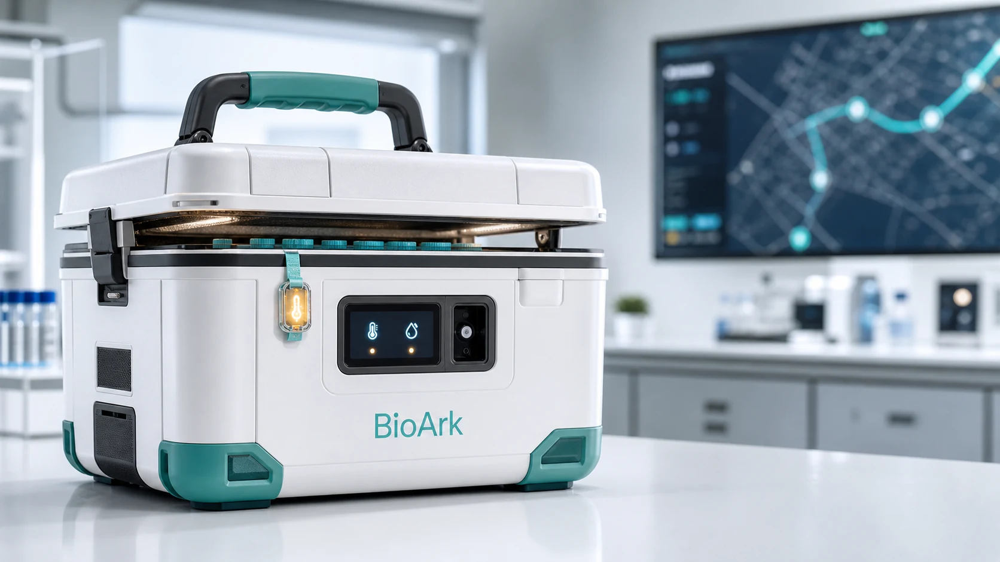

生物样本运输 · 智能硬件
BioArk用于生物样本运输的智能方舟
样本送到实验室时，如何回看途中是否出现过异常？BioArk 把运输箱的监测数据与样本批次、运输任务和交接记录关联起来。
- 我的角色
- 项目负责人 · 2024.10—至今
- 核心设计
- 实时监测温度、湿度与震动，支持运输状态查看与异常记录
- 项目成果
- 国家级大创项目 · 省级创新大赛金奖 · TRIZ 校级一等奖
哈尔滨医科大学 智能医学工程
Yan Zhengjie
生物样本在路上经历了什么？
我是智能医学工程本科生，辅修法学。我负责的 BioArk 项目关注样本运输途中温度、湿度和震动的变化，也关注交接时怎样把这些记录留给下一位接手的人。

生物样本运输 · 智能硬件
样本送到实验室时，如何回看途中是否出现过异常？BioArk 把运输箱的监测数据与样本批次、运输任务和交接记录关联起来。
医疗设备维保 · 数据管理
一台设备报修后，怎样找到它的维修记录？MedFix 在同一套系统里展示维修工单、设备档案与维修架的现场信息。
基于 OpenPose 的坐姿管理 APP，通过姿态检测、提醒与可视化报告支持预防导向的健康管理。
运用 TRIZ 方法设计三款多场景创面贴，并通过 3D 实物模型及临床专家、患者评价完善方案。
把学习和运动记进同一本日历。记下今天读了几章书、做了多久运动，周末就能回看这一周的时间都花在了哪里。
把手写词表做成双向复习卡片。看英文想中文，也可以反过来练。翻面核对后标记掌握程度，下一轮再练没记牢的词。
2023.09 — 至今
生物信息科学与技术学院
智能医学工程本科 · 辅修法学
我喜欢生物学，也喜欢在团队中工作。本科期间，我担任班长和学院自律管理与服务委员会主席。
课余我打篮球、跑田径、游泳，也参加主持和朗诵。在新生杯篮球赛，我和队友一起拿过校级冠军。在校运会上，我也拿过接力银牌和跨栏铜牌。
欢迎交流医工交叉的课程、项目和实践。